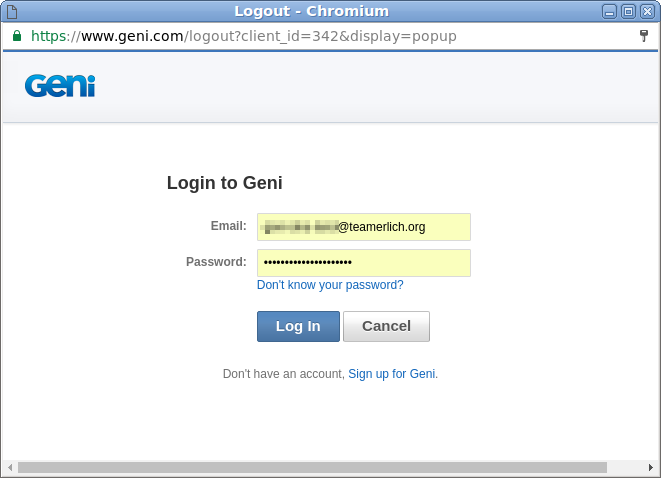
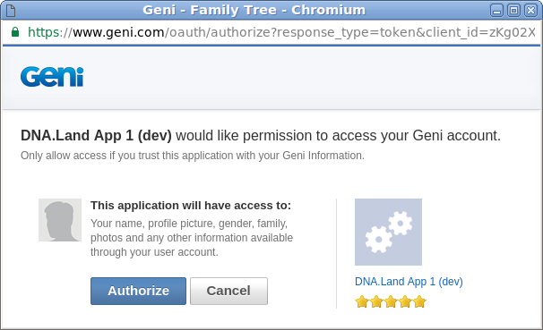
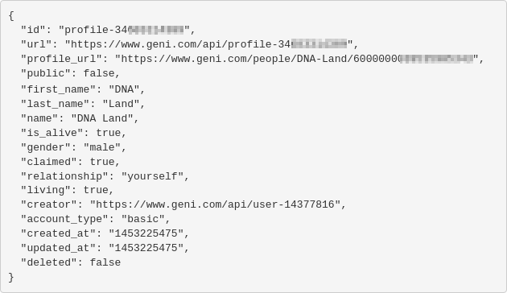

Overview
This website demonstrates how to use geni.com's
javascript API library to query public geni profiles.
For source code visit our
GitHub Repository
Step 1: Login to Geni
Clicking on the "connect" button above will show a pop-up
window, allowing you to login to you Geni.com account.
You username/password are secure and only transmitted to Geni.com's servers.

Step 2: Authorize Access
For this website to access your public profile information,
you need to authorize our application ("application" is a program
or a website).
Later on, you can always choose to de-authorize for the application
and block future access by visiting
geni.com.

Step 3: Results
Once access is authorized, this web page will query your public
profile information from the geni.com website, and display it here:
